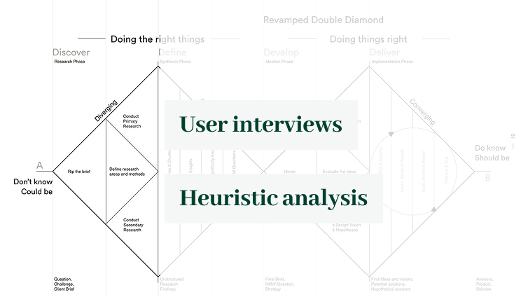
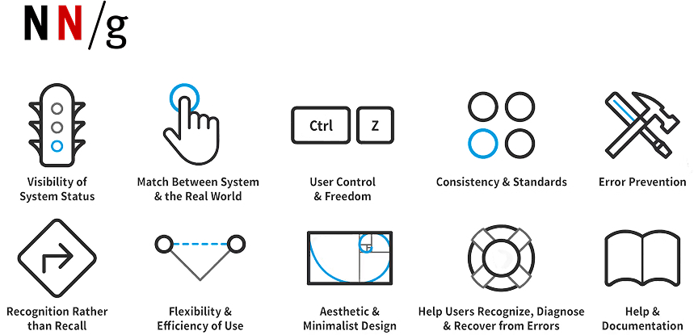
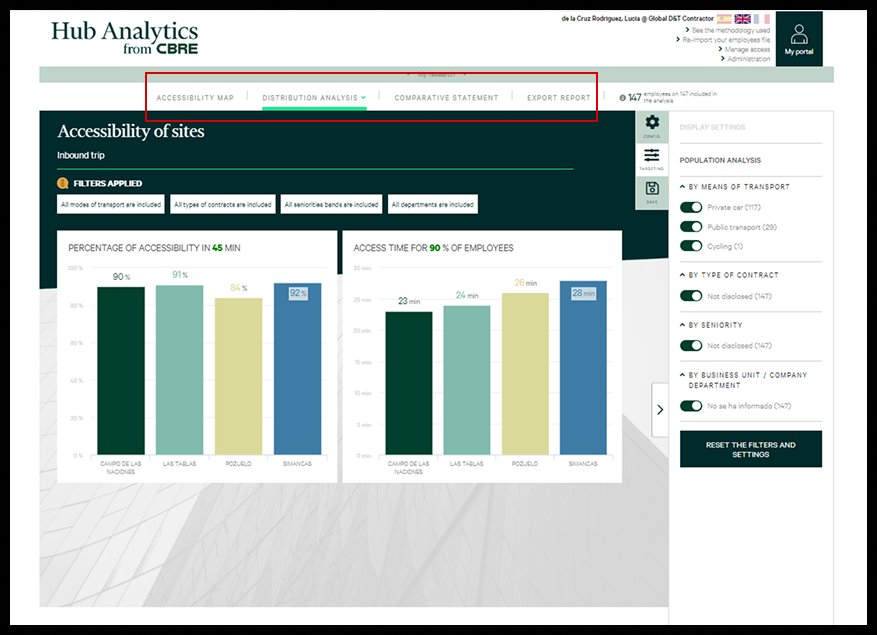
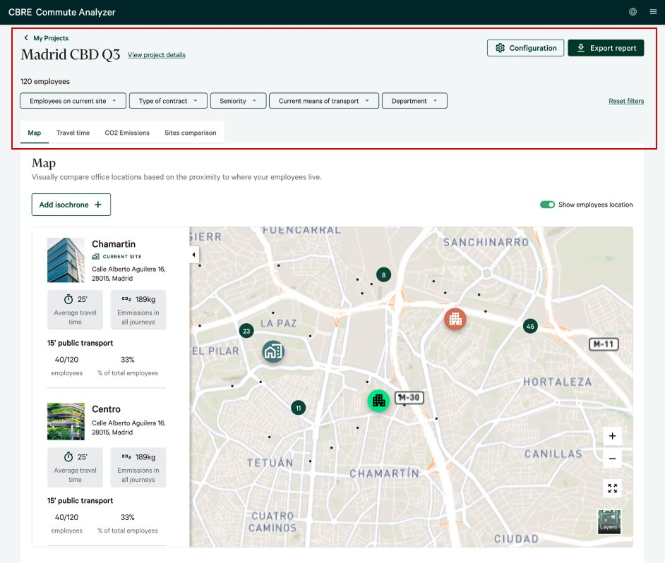
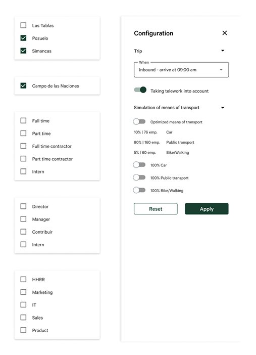
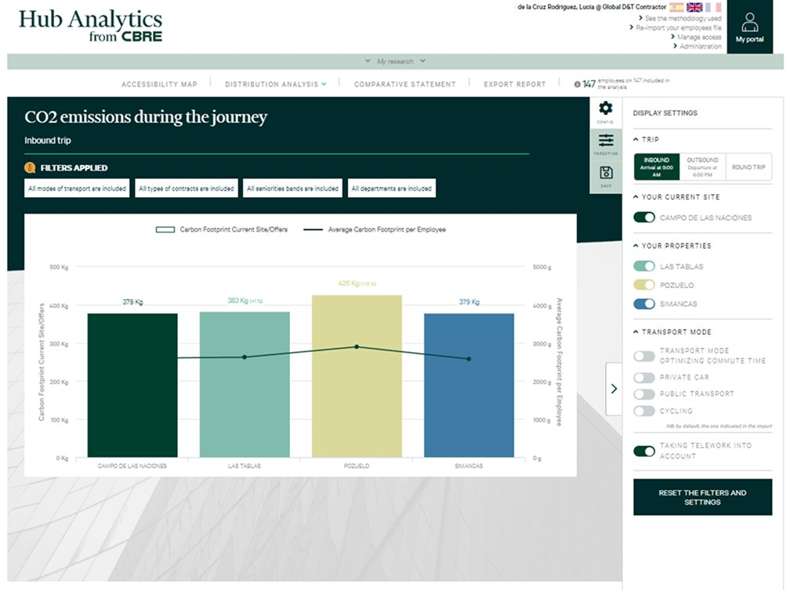
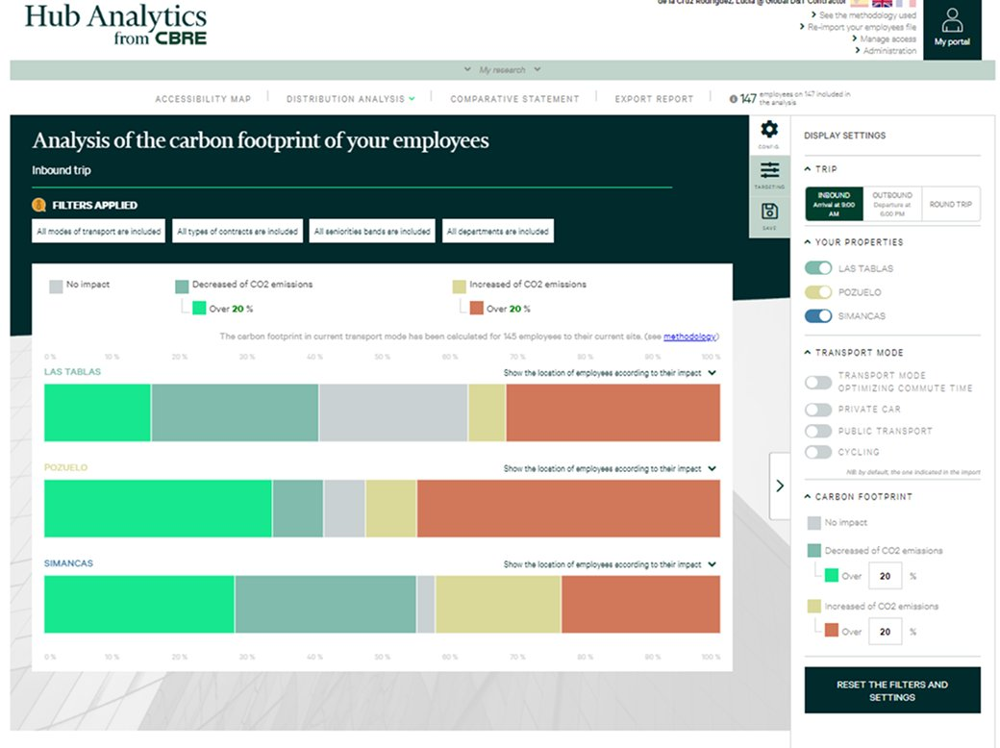
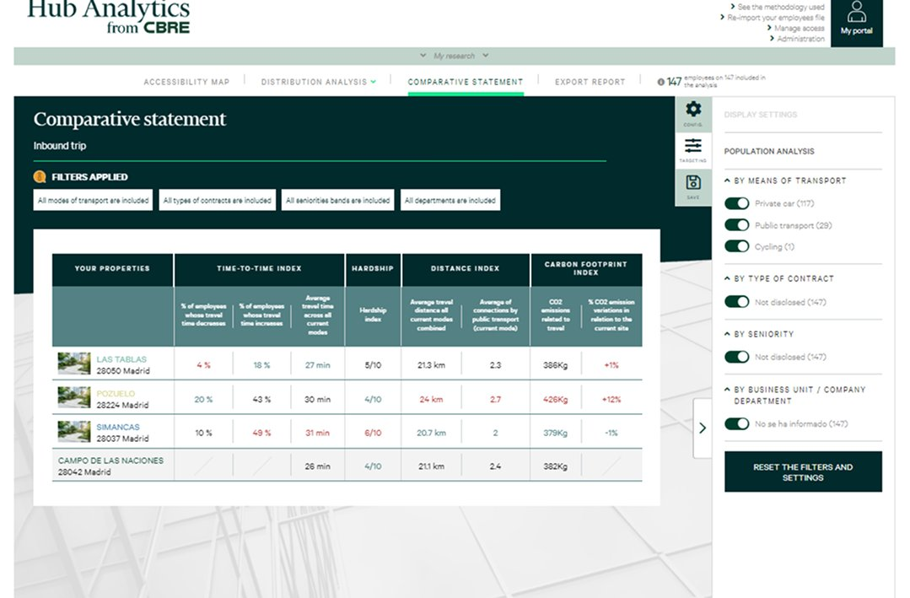
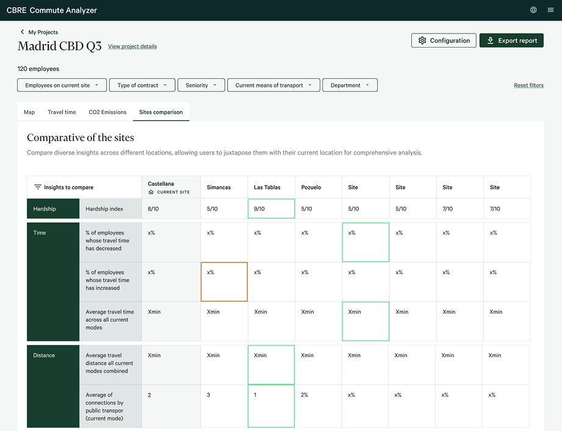
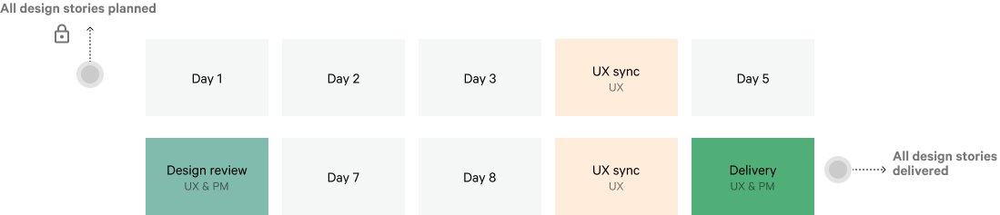

Background
Commute Analyzer is CBRE's internal tool for helping commercial teams find the optimal office location for their clients — analysing employee commute patterns, travel time, CO₂ emissions, and accessibility across candidate sites.
The product was technically capable but experientially broken. Slow workflows, inconsistent navigation, and outdated visuals created friction at precisely the moment commercial teams needed to move fast and look credible in front of clients.
The product
To give full context to the redesign, we created a landing page at the end of the project to communicate the product's value proposition to new commercial teams. It captures the three core capabilities — finding the optimal office location, tracking CO₂ emissions across sites, and giving visibility into employee travel patterns — and shows how the tool positions itself within CBRE's offering.
This landing page was designed after the redesign was complete, translating the redesigned product into a clear narrative for onboarding and internal adoption.
Research approach
The research phase used two complementary lenses: user interviews with commercial teams across 5 countries to understand the real-world friction, and a heuristic evaluation against the Nielsen Norman framework to surface structural usability issues that users had normalised and stopped reporting.
"We need the client to understand the data for themselves to speed up the process. The visual design is complex and kind of old — clients put these graphics in their decision reports."


What we found
User interviews and heuristic evaluation converged on the same diagnosis: a product built around technical completeness rather than human usability. These were the three core failure areas.

Problem 01Redesign — Information architecture
The original product had a flat navigation with no hierarchy — every section felt equally important, making it impossible to orient within a project. The redesign introduced a clear project header with persistent context (project name, employee count, active filters), inline filter chips, and a tab structure that reflects the actual analysis workflow.
Two versions were explored before landing on the final approach. The key design question was how much context to surface at all times — too little and users lose orientation, too much and the interface becomes noisy. The final version strikes a balance: a persistent header anchors every view, while filters and configuration stay accessible but unobtrusive.

Version 1
Redesign — Data visualisation
The original charts used dark backgrounds, inconsistent colour coding, and lacked contextual labels — making it difficult for clients to read, and impossible to use in reports. The redesign prioritised export-ready visualisations: light backgrounds, clear labelling, and a colour system that communicated meaning rather than just differentiating bars.

Before
BeforeRedesign — Consistency & standards
The Comparative Statement was one of the most used screens — commercial teams would export it directly into client presentations. The original version mixed inconsistent table styles, unclear colour hierarchies, and redundant information. The redesign introduced a structured comparison table with consistent grouping, highlight colours for key metrics, and a clear current-site anchor.

Before
AfterRedesign — New feature
Beyond the redesign, the project included the design of a new feature: Isochrones. This visualisation shows the real geographic area reachable from a site within a given travel time — by any transport mode, at any time of day. It gives commercial teams a powerful, map-based way to show clients the difference between candidate sites in a single glance.
The feature was designed iteratively with the development team, ensuring the time/mode controls were technically feasible within the existing data infrastructure.
Workflow
The project ran in two-week agile sprints. Each sprint began with planning, moved through design and UX review cycles, and closed with a joint delivery session between UX, PM, and the development team. This structure meant every design decision was validated before implementation — and the live product was never disrupted.

Outcomes
The redesign transformed a technically capable but friction-heavy product into one that commercial teams could use confidently in client-facing contexts — which was always the real measure of success.
Increased product adoption — internal users engaged more frequently with a product they previously found cumbersome.
Strong qualitative feedback from internal users during testing — particularly around the clarity of the new data visualisations and their usability in client presentations.
Isochrones feature shipped — a net-new capability extending the tool's value proposition to clients, designed from scratch during the redesign process.
Zero operational disruption — phased sprint delivery kept the product live and fully usable throughout the entire redesign.
CBRE Group, Inc.
CBRE is the world's largest commercial real estate services and investment firm, operating in more than 100 countries. It provides a comprehensive range of integrated services including facilities management, transaction and project management, property management, investment management, and development services. It employs over 100,000 people worldwide. Commute Analyzer is one of CBRE's proprietary internal tools — used by commercial teams across Europe to help clients make data-driven decisions about office location based on employee commute patterns, carbon footprint, and accessibility analysis.